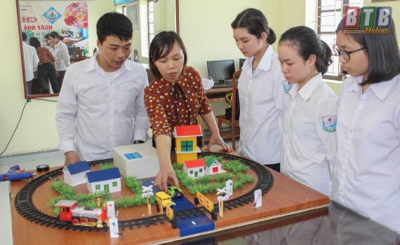

Tin tức
Văn bản của sở GDĐT
Thật ý nghĩa và thiêng liêng, khi trong những ngày đầu xuân mới năm nay, các cấp, các ngành, địa phương tổ chức phát động thi đua thực hiện Di chúc Bác Hồ, gắn với thi đua mừng Đảng, mừng Xuân, mừng đất nước đổi mới. Bản Di chúc thiêng liêng của Bác Hồ là di sản vô giá cho hôm nay và muôn đời sau, mang ý nghĩa nhân văn sâu sắc, mãi khắc sâu trong tâm khảm mỗi người dân Việt Nam, với những tư tưởng cơ bản, thể hiện cốt cách, tâm hồn cao đẹp và đạo đức cách mạng trong sáng của Chủ tịch Hồ Chí Minh. Di chúc của Người còn là văn kiện lý luận quan trọng của Đảng, 'là ngọn đèn soi sáng con đường cách mạng Việt Nam; là hành trang vững chắc để toàn dân tộc đoàn kết, đồng lòng khắc phục mọi khó khăn, thử thách, xây dựng đất nước ta “đàng hoàng hơn, to đẹp hơn” và "ai cũng có cơm ăn, áo mặc, ai cũng được học hành", như mong muốn cháy bỏng của Bác lúc sinh thời.
Trước lúc đi xa, Chủ tịch Hồ Chí Minh kính yêu để lại cho toàn Đảng, toàn dân, toàn quân ta bản Di chúc bất hủ. Những suy nghĩ tâm huyết, sâu xa của Người; những điều Bác căn dặn trong Di chúc vẫn là những vấn đề căn cốt, luôn mang tính thời sự đối với Đảng ta, nhân dân ta trong suốt 50 năm qua và mãi tới mai sau. Nghiêm túc quán triệt, học tập và làm theo Di chúc của Người trong giai đoạn hiện nay là việc làm hết sức cần thiết và thiết thực. Hơn thế, chúng ta cần kế thừa, phát triển, vận dụng sáng tạo những lời huấn thị, chỉ dẫn quý báu của Người trong thời kỳ mới, hoàn cảnh lịch sử mới; phù hợp và sát thực tế của từng bộ, ngành, địa phương, cơ quan, đơn vị…
Tự hào về những thành tựu vẻ vang của cách mạng Việt Nam trong nửa thế kỷ thực hiện Di chúc của Bác Hồ, đặc biệt là những thành tựu ấn tượng, đổi mới bứt phá của đất nước từ Đại hội XII của Đảng đến nay, chúng ta cần khơi dậy mạnh mẽ hơn nữa tinh thần học tập, làm theo Di chúc của Bác; học tập, làm theo tư tưởng, đạo đức, phong cách Hồ Chí Minh; đẩy mạnh giáo dục lý tưởng cách mạng, đạo đức, lối sống của Chủ tịch Hồ Chí Minh trong cán bộ, đảng viên và các tầng lớp nhân dân, nhất là thế hệ trẻ. Cùng với tuyên truyền, tôn vinh các tập thể, cá nhân điển hình; phổ biến kinh nghiệm, cách làm hay trong thực hiện Di chúc và học tập, làm theo Bác, chúng ta cũng thẳng thắn phê phán, đấu tranh kiên quyết với những hạn chế, khuyết điểm, những tư tưởng, hành vi không đúng với lời dạy, những điều mong muốn của Người, nhất là chống chủ nghĩa cá nhân, tệ quan liêu, tham nhũng, thoái hóa, biến chất… của một bộ phận cán bộ, đảng viên.
Trong Di chúc, Chủ tịch Hồ Chí Minh căn dặn và “để lại muôn vàn tình thân yêu cho toàn dân, toàn Đảng, cho toàn thể bộ đội, cho các cháu thanh niên và nhi đồng”, đặc biệt Người căn dặn những điều căn cốt về xây dựng Đảng, về đoàn kết trong Đảng và xây dựng khối đại đoàn kết toàn dân tộc.
Kỷ niệm 50 năm thực hiện Di chúc Bác Hồ, phát động học tập và làm theo Di chúc của Người, là dịp để mỗi cán bộ, đảng viên, đoàn viên thanh niên và toàn dân, toàn quân tìm về bên Bác, thêm thấm nhuần những lời dạy của Người, tạo ra đợt sinh hoạt chính trị sâu rộng. Mỗi tập thể, cá nhân hãy soi mình vào những yêu cầu, kỳ vọng, định hướng của Người để phấn đấu, rèn luyện nghiêm túc hơn, cố gắng đóng góp nhiều hơn cho đất nước; đặc biệt là đẩy mạnh thực hiện hiệu quả việc xây dựng, chỉnh đốn Đảng, đề cao trách nhiệm, vai trò nêu gương của cán bộ, đảng viên. Đó cũng chính là những công việc quan trọng, thiết thực và có ý nghĩa nhất trong dịp kỷ niệm 50 năm thực hiện Di chúc thiêng liêng của Người.